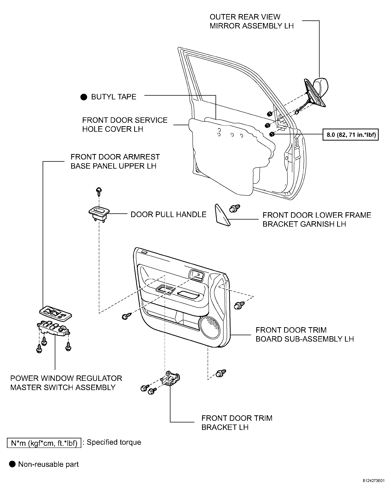

Home
>>
Scion
>>
2006
>>
xB Standard
>>
Repair and Diagnosis (Single Page)
>>
Accessories & Equipment
>>
Mirrors
>>
Mirror
>>
Outer Rear View Mirror
>>
Components
Outer Rear View Mirror: Components
Fig 1: Identifying Outer Rear View Mirror Components

Courtesy of © TOYOTA, LICENSE AGREEMENT TMS1002